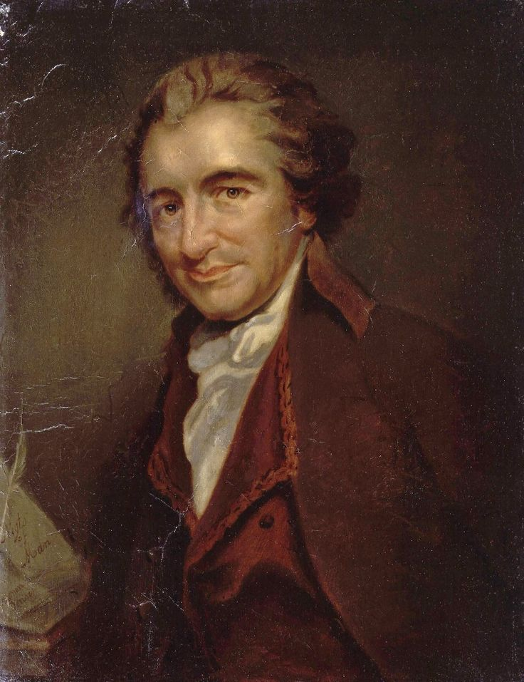

Who Was Thomas Paine?
Thomas Paine (1737–1809) was an English-born writer, political activist, revolutionary, and one of the most influential political thinkers of the Age of Enlightenment. He played an important intellectual role in both the American Revolution and the French Revolution, using clear and accessible language to defend liberty, representative government, natural rights, and political equality.
Thomas Paine's philosophy was closely connected with the belief that political institutions should exist for the benefit of ordinary human beings rather than hereditary monarchs, aristocratic families, or privileged social classes. He argued that legitimate government rests upon the people and that political authority should be accountable to those whom it governs.
Paine became internationally famous through works such as Common Sense, Rights of Man, and The Age of Reason. His writings helped popularize Enlightenment ideas and made him one of the strongest defenders of republican government, democratic principles, freedom, and the universal rights of human beings.
Although Thomas Paine is often remembered primarily as a revolutionary political writer, his ideas also belong to the broader history of philosophy. His work addresses fundamental questions about human rights, political legitimacy, religion, reason, social justice, equality, property, poverty, and the relationship between individuals and the state.
Thomas Paine: Quick Facts
- Full name — Thomas Paine
- Born — January 29, 1737
- Died — June 8, 1809
- Birthplace — Thetford, England
- Philosophical period — Enlightenment and modern political thought
- Major traditions — Enlightenment philosophy, liberal political thought, republicanism, and radical political reform
- Major subjects — Natural rights, democracy, government, revolution, religion, equality, and social justice
- Known for — Influential writings during the American and French Revolutions
- Famous work — Common Sense
- Major political work — Rights of Man
- Major religious work — The Age of Reason
- Important social work — Agrarian Justice
Thomas Paine's Early Life and Historical Background

Thomas Paine was born in Thetford, England, in 1737. His early life was not the conventional path of an aristocratic philosopher or university scholar. He worked in several occupations and experienced financial difficulties before becoming involved in political writing, reform movements, and the intellectual debates that shaped the late eighteenth century.
Paine's background influenced the style and purpose of his writing. Unlike many political thinkers who wrote primarily for educated elites, Paine attempted to communicate complex political ideas in direct and understandable language. His writing was designed not only to influence governments and intellectuals but also to persuade ordinary readers to think about political authority and human freedom.
The eighteenth century was a period of major intellectual and political change. Enlightenment thinkers increasingly questioned absolute monarchy, inherited privilege, religious authority, and traditional political institutions. Ideas about reason, liberty, natural rights, scientific inquiry, and popular government created an intellectual environment in which Paine's political philosophy could develop.
In 1774, Paine moved from Britain to the American colonies. This decision transformed his life and placed him at the center of the revolutionary conflicts that would eventually produce the United States. Within a short time, he became one of the most widely read and politically influential writers of the American Revolution.
Thomas Paine and the Enlightenment
Thomas Paine was an important political voice of the Enlightenment, a movement that emphasized reason, criticism, individual liberty, and the possibility of improving human society. His writings applied Enlightenment principles directly to political institutions and asked whether governments could justify the authority they claimed over human beings.
Paine believed that political traditions should not be accepted simply because they were old. Institutions such as monarchy and hereditary aristocracy had to be examined critically. If they could not be justified by reason or shown to serve the public good, Paine believed that people had the right to reform or replace them.
The Enlightenment also encouraged the idea that human beings possess certain rights independently of the particular governments under which they live. Paine developed this principle into one of the central themes of his political philosophy. Rights were not gifts from kings; they belonged to human beings by virtue of their existence.
Paine's importance within Enlightenment thought comes partly from his ability to transform philosophical ideas into revolutionary political arguments. He did not merely discuss liberty and natural rights in abstract terms. He used them to challenge actual governments and to argue for political systems based upon representation and the consent of the people.
What Was Thomas Paine's Political Philosophy?
Thomas Paine's political philosophy was based on the belief that government exists to protect the rights and welfare of the people. Political authority is not naturally possessed by monarchs, aristocrats, or hereditary families. A legitimate government must ultimately derive its authority from the people who live under it.
Paine distinguished between society and government. Society, in his view, arises naturally from human needs, cooperation, and relationships. Government, however, is an institution created to organize public life and protect people from injustice and disorder. This distinction became particularly important in his political criticism of excessive and oppressive government.
He believed that governments should be judged by their practical effects on human life. A political system that protects privilege while allowing poverty, inequality, or oppression cannot claim legitimacy merely because it has existed for generations. Political institutions must be open to criticism, reform, and change.
Paine therefore supported representative government and opposed political systems based on inherited power. His political philosophy helped shape modern discussions about democracy, citizenship, human rights, constitutional government, and the principle that political institutions should serve the public rather than rule over society as private possessions.
Thomas Paine's Philosophy of Natural Rights
Natural rights are among the most important ideas in Thomas Paine's philosophy. Paine argued that human beings possess rights before the creation of governments. Governments do not create these rights and therefore cannot legitimately claim absolute power to grant or remove them according to the wishes of rulers.
According to Paine, every generation possesses the right to organize its own political affairs. No earlier generation can permanently bind all future generations to a particular form of government. This principle directly challenged hereditary monarchy and the belief that political authority could pass automatically through family lines.
Paine's understanding of rights was closely connected with political equality. Human beings may differ in wealth, ability, and social position, but these differences do not justify the existence of a permanent class of people who possess political power simply because of their birth.
His theory of natural rights later became important to the broader history of human rights and democratic thought. Paine helped popularize the idea that political institutions must respect fundamental human claims to liberty, security, participation, and equal legal status.
Thomas Paine and the American Revolution
Thomas Paine became internationally famous because of his role in the intellectual history of the American Revolution. When he arrived in the colonies, many Americans were dissatisfied with British rule but still hoped for reconciliation with Britain. Paine helped shift the political debate toward complete independence.
His revolutionary writing argued that the colonies should not remain politically dependent upon a distant monarchy. Paine believed that the geographical separation between Britain and America, combined with the principles of liberty and self-government, made independence both reasonable and politically necessary.
Paine's influence came partly from his ability to address ordinary people. Rather than presenting independence as a technical question for political elites, he described it as a matter of common sense, natural rights, freedom, and human dignity. His arguments reached a much broader audience than many traditional political writings.
During the Revolutionary War, Paine continued to write in support of the American cause. His writings attempted to sustain public morale and explain why the struggle for independence mattered. He therefore became not only a philosopher of political liberty but also an active participant in one of the defining revolutions of the modern world.
Thomas Paine's Common Sense
Common Sense, published in 1776, is Thomas Paine's most famous political work and one of the most influential pamphlets in American history. The work argued openly for American independence at a time when many colonists still hoped that political disputes with Britain could be resolved without complete separation.
In Common Sense, Paine attacked the institution of monarchy and criticized hereditary succession. He argued that there was no rational basis for assuming that the descendants of a ruler should automatically possess the right to govern future generations. Political authority, he believed, should not be inherited like private property.
Paine also challenged the idea that the American colonies benefited from permanent dependence on Britain. He argued that America had its own interests and that an independent political future would allow the colonies to create institutions more consistent with liberty and representative government.
The enormous success of Common Sense demonstrated the power of political writing to influence public opinion. Paine transformed philosophical principles about government and rights into arguments that could be understood and debated by a large reading public. The work remains central to the history of democracy and political philosophy.
The title itself reflected Paine's rhetorical strategy. He attempted to show that independence was not an extreme or complicated idea but the logical conclusion that reasonable people could reach when they examined monarchy, political power, geography, and the interests of the American population.
Thomas Paine's Ideas About Government
Thomas Paine believed that government should be limited by its purpose. The existence of government does not automatically make every exercise of political power legitimate. Government must justify its authority by protecting rights, maintaining justice, and serving the interests of the community.
Paine was deeply suspicious of complicated political systems that allowed a small number of privileged individuals to dominate public life. He believed that excessive hereditary institutions could become detached from the needs of ordinary citizens and preserve themselves even when they no longer served the public good.
Representative institutions were therefore important to his political philosophy. Citizens should have a meaningful connection with the political institutions that govern them. Political power should not exist as a permanent possession of one family, social class, or religious institution.
Paine's ideas about government contributed to the development of modern democratic thought. His work helped establish the principle that political institutions are human creations rather than sacred structures beyond criticism. Because people create governments, people also possess the right to reform them when they become unjust.
Thomas Paine on Democracy and Republicanism
Thomas Paine strongly supported republican government and opposed hereditary monarchy. For Paine, a republic was connected with the idea that political authority should come from the people rather than from inherited royal power.
His democratic ideas emphasized representation and political accountability. Governments should not operate independently of the people for generations without public consent. Political institutions must remain connected with the citizens whose rights and interests they are supposed to protect.
Paine also understood democracy as connected with equality. A society cannot fully claim to respect human rights while maintaining a political system in which some people are permanently superior to others because of their birth. This criticism made Paine a powerful opponent of aristocracy.
Modern democracy differs in many ways from the political systems of Paine's own time, but his central principles remain influential. The belief that governments derive legitimacy from the people, that rulers should be accountable, and that political authority should not be inherited continues to shape democratic political philosophy.
Thomas Paine and the French Revolution
Thomas Paine's political influence was not limited to America. He became deeply involved in the intellectual and political debates surrounding the French Revolution. Like the American Revolution, the French Revolution raised fundamental questions about monarchy, rights, citizenship, political equality, and the power of the people.
Paine defended the revolutionary principle that people possess the right to reform political institutions that violate their rights. He rejected the argument that ancient traditions or hereditary monarchy could justify permanent political authority over future generations.
His involvement in France was not without danger. Revolutionary politics became increasingly unstable, and Paine himself was imprisoned during the Reign of Terror. His experience demonstrated the difference between supporting political revolution in principle and living through the unpredictable violence of revolutionary events.
Paine nevertheless remained committed to republican principles. His life connected the political struggles of Britain, America, and France and made him one of the most international figures of the revolutionary Enlightenment.
Thomas Paine's Rights of Man
Rights of Man is one of Thomas Paine's most important works of political philosophy. It was written partly as a response to arguments defending the British political system and criticizing the French Revolution. Paine used the work to defend revolution, natural rights, and representative government.
A central argument of Rights of Man is that political rights belong to individuals and are not the property of governments or monarchies. Governments are created by people to secure rights; they do not possess a natural authority to define human freedom according to their own interests.
Paine also attacked hereditary government. No person, he argued, can possess the authority to choose the political rulers of generations that have not yet been born. Each generation must retain the ability to determine its own political arrangements.
The work connected political liberty with broader questions of social welfare and economic justice. Paine argued that a government could be both more representative and more concerned with the welfare of ordinary people. Political reform, in his view, did not require the preservation of poverty and privilege.
Rights of Man remains important because it presents a clear defense of the idea that political legitimacy must be grounded in human rights. It became a major text in the history of liberalism, republicanism, democratic theory, and the international development of modern human rights discourse.
Thomas Paine on Monarchy and Hereditary Government
Thomas Paine was one of the Enlightenment's most forceful critics of monarchy. He questioned the assumption that one family could possess a permanent right to rule an entire nation simply because of ancestry. For Paine, political authority required a more rational foundation than inheritance.
Hereditary succession created a particularly serious problem in Paine's view. Even if a particular ruler were capable, there was no guarantee that future descendants would possess the same ability, knowledge, or concern for the public good. Birth could not reliably produce political wisdom.
Paine also believed that monarchy encouraged artificial distinctions between human beings. A system that treats one family as naturally entitled to rule and others as naturally required to obey conflicts with the principle that human beings possess equal moral status.
His criticism of monarchy was therefore philosophical as well as political. Paine questioned the entire idea that political hierarchy could be justified by tradition alone. Reason, consent, rights, and public welfare were more important foundations for legitimate government than ancestry.
Thomas Paine's Agrarian Justice
Agrarian Justice is one of Thomas Paine's most interesting works on property, poverty, and economic inequality. In this work, Paine examined the consequences of private property in land and considered how society might address the inequalities created when natural resources become privately controlled.
Paine distinguished between the natural world and the improvements created through human labor. He accepted private ownership of the improvements that individuals create, but he argued that the earth itself was originally the common inheritance of humanity.
Because private land ownership excluded many people from direct access to the natural world, Paine proposed a form of compensation funded through taxation. His proposal has often been discussed as an early predecessor of later ideas concerning social security and basic income.
The importance of Agrarian Justice lies in its attempt to connect natural rights with economic conditions. Paine recognized that political equality alone may not solve every form of inequality. Questions about property and wealth also influence whether people can genuinely participate in society with dignity.
Thomas Paine's Religious Views
Thomas Paine's views on religion were among the most controversial aspects of his life and philosophy. He strongly criticized organized religion when he believed that religious institutions promoted fear, intolerance, political authority, or doctrines that could not be reasonably examined.
Paine did not simply reject belief in God. He is generally associated with deism, the belief that reason and the natural world can provide evidence for a creator without requiring acceptance of every claim made by organized religious traditions.
His religious philosophy emphasized the importance of independent thought. Paine believed that individuals should not be forced to accept theological doctrines simply because they were inherited from tradition or defended by religious authorities.
These views made Paine a deeply controversial figure, especially in later life. His criticism of Christianity and organized religion damaged his public reputation among many readers, even though his earlier political writings had made him one of the most celebrated revolutionary authors of his age.
Thomas Paine and Deism
Deism was an important part of Thomas Paine's religious thought. Deists generally emphasized belief in a creator while rejecting the idea that religious truth must depend entirely on institutional authority, miracles, inherited doctrines, or sacred traditions.
Paine believed that the natural world could be understood as a kind of universal evidence available to all human beings. Nature did not belong exclusively to one religious institution or one group of interpreters. The existence and order of the universe could therefore be examined through reason and observation.
His deism reflected a broader Enlightenment confidence in reason. Paine did not believe that religious authorities should be immune from criticism. Claims about revelation and supernatural events could be questioned in the same intellectual spirit that philosophers applied to political traditions.
At the same time, Paine's deism should not simply be confused with atheism. He repeatedly expressed belief in a creator. His disagreement was primarily with organized religious systems and particular theological doctrines rather than with the existence of God itself.
Thomas Paine's The Age of Reason
The Age of Reason is Thomas Paine's major work on religion and one of the most controversial books associated with the Enlightenment. Written during the 1790s, it presented a strong criticism of organized religion and questioned traditional interpretations of biblical revelation.
Paine argued that genuine belief should not require the surrender of reason. Religious traditions contain historical claims, moral teachings, and accounts of supernatural events, but Paine believed that individuals should remain free to examine these claims critically.
The work also defended deism. Paine regarded nature and the universe as a more universal form of evidence for a creator than written religious texts that depend upon particular languages, traditions, and historical institutions.
The Age of Reason had a major effect on Paine's reputation. Many people who admired his revolutionary political writings rejected his criticism of Christianity. Nevertheless, the book remains an important document in the history of religious skepticism, freedom of thought, deism, and Enlightenment criticism of religious authority.
The central philosophical issue raised by Paine's work remains relevant: how should reason, personal belief, tradition, and institutional authority relate to one another? His answer strongly favored intellectual independence and the right of individuals to examine inherited beliefs.
Thomas Paine on Reason, Religion, and Revelation
Paine's philosophy placed great importance on reason. He believed that individuals should use their intellectual abilities rather than accept political or religious claims without examination. This principle linked his religious thought with his political philosophy.
Just as Paine questioned inherited monarchy, he also questioned inherited religious authority. The age of a tradition did not make it automatically true. A belief could be ancient and widely accepted while still remaining open to criticism and rational examination.
Paine was particularly skeptical about claims of revelation passed from one person to another. If a revelation was originally received by one individual, he argued, other people only received a report about that experience. This raised questions about the certainty of secondhand religious authority.
His arguments made him a significant figure in the history of freethought. Whether one agrees or disagrees with Paine's conclusions, his writings helped establish the principle that religion, like politics and philosophy, can be discussed and criticized through public reasoning.
Thomas Paine's Philosophy of Revolution
Thomas Paine did not believe that governments possessed an unlimited right to continue ruling regardless of their actions. If a government violated fundamental rights and refused meaningful reform, people could possess the right to change the political system under which they lived.
His support for revolution was connected with his theory of political legitimacy. Government exists because human beings create political institutions for particular purposes. When those institutions become instruments of oppression, the people who created them retain the authority to establish new arrangements.
Paine's philosophy of revolution influenced both the American and French revolutionary traditions. He viewed political change as more than a conflict between rival rulers. Revolution could represent a broader attempt to establish government upon principles of rights, representation, and equality.
At the same time, Paine's life showed the dangers of revolutionary politics. The French Revolution demonstrated that movements created in the name of liberty could also descend into violence and repression. This tension remains an important problem in political philosophy.
Thomas Paine's Main Philosophical Ideas
1. Natural Rights Belong to Human Beings
Paine argued that rights do not originate from kings or governments. Human beings possess fundamental rights independently of political institutions, and the purpose of legitimate government is to protect rather than arbitrarily destroy those rights.
2. Government Should Derive Authority from the People
Political authority cannot be justified permanently through ancestry. Governments must ultimately rest upon the people and remain connected with the interests, rights, and participation of the citizens they govern.
3. Hereditary Monarchy Is Irrational
Paine rejected the belief that political power should pass automatically from parents to children. Future generations, he argued, have their own rights and cannot simply be treated as the political property of decisions made by the past.
4. Revolution Can Be Justified Against Oppression
When governments violate fundamental rights and become instruments of oppression, people may possess the right to establish new political institutions. Paine applied this principle directly to the revolutionary struggles of his own time.
5. Reason Should Be Used to Examine Religion
Paine believed that religious claims should not be protected from intellectual examination. He defended deism and criticized doctrines and institutions that, in his view, demanded belief without sufficient rational justification.
6. Political Freedom Should Include Social Concern
Paine's later writings showed that liberty was not only a matter of removing kings. Governments should also address serious poverty and inequality and create institutions that allow people to live with greater dignity and security.
Thomas Paine and John Locke
Thomas Paine and John Locke are both important to the history of natural rights and modern political philosophy. Locke's theories of natural rights, consent, and the right to resist unjust government helped create an intellectual tradition within which Paine later developed his own revolutionary arguments.
Both thinkers rejected the idea that rulers possess an unlimited natural authority over the people. Government requires justification, and political power must be connected with the protection of human rights.
Paine, however, often wrote in a more direct and radical political style. He was less interested in constructing a systematic academic philosophy and more interested in applying principles of rights to immediate political struggles such as American independence and the French Revolution.
Their connection demonstrates how Enlightenment political philosophy developed across generations. Locke provided influential theoretical arguments concerning rights and government, while Paine helped transform similar principles into powerful arguments for democratic political change.
Thomas Paine and Jean-Jacques Rousseau
Thomas Paine and Jean-Jacques Rousseau were both important figures in the political thought surrounding the age of revolution. Both criticized political inequality and questioned the legitimacy of social arrangements that allowed a small group to dominate the majority.
Rousseau is especially known for the concept of the social contract and the general will, while Paine focused strongly on natural rights, representative government, and the practical political consequences of hereditary rule.
Both thinkers believed that political institutions were human creations rather than permanent natural facts. This meant that governments could be evaluated, criticized, and redesigned according to principles concerning freedom, equality, and the interests of the people.
Their differences are also important. Rousseau developed a more systematic philosophical account of political community, whereas Paine became famous as a political writer whose work directly addressed revolutions, constitutions, monarchy, rights, and public reform.
Major Works of Thomas Paine
- Common Sense — Paine's famous 1776 pamphlet arguing for American independence and criticizing monarchy and hereditary government.
- The American Crisis — A series of revolutionary writings intended to support the American cause during the War of Independence.
- Rights of Man — A major defense of the French Revolution, natural rights, representative government, and political reform.
- The Age of Reason — Paine's influential critique of organized religion and defense of deism and independent religious thought.
- Agrarian Justice — A work examining property, poverty, land ownership, economic inequality, and social compensation.
- The Rights of Man, Part the Second — A continuation of Paine's arguments concerning political rights, government, taxation, and social reform.
Thomas Paine's Influence and Legacy
Thomas Paine had a major influence on the political culture of the American Revolution. Common Sense became one of the most important texts advocating independence and helped bring philosophical arguments about rights and self-government into popular political discussion.
His influence also extended across Europe. Paine became an important defender of the French Revolution and a leading international voice for republicanism, representative government, and opposition to hereditary monarchy.
Paine's ideas about natural rights contributed to later traditions of democratic and liberal political thought. His writings are frequently discussed in relation to constitutional government, human rights, political equality, social reform, and the principle that governments must be accountable to the people.
His work on social welfare and property also attracted later interest. Agrarian Justice is particularly important in discussions about economic inequality and the relationship between natural resources, private property, taxation, and public welfare.
Paine's legacy has remained controversial because of his religious views. Yet his willingness to criticize both political and religious authority illustrates one of the defining principles of the Enlightenment: inherited institutions should be open to rational examination.
Thomas Paine's Philosophy Explained Simply
- Where do human rights come from? Paine believed that fundamental rights belong naturally to human beings and are not gifts from governments or kings.
- Why should governments exist? Governments should protect rights, maintain justice, and serve the people rather than preserve the power of privileged families.
- What did Paine think about monarchy? He strongly opposed hereditary monarchy because he believed that political authority should not automatically pass through family bloodlines.
- Did Paine support democracy? Yes. He supported republican and representative forms of government in which political authority is connected with the people.
- What did he think about revolution? Paine believed that people could have the right to change a government when it became oppressive and violated fundamental human rights.
- What were his religious beliefs? Paine was associated with deism. He believed in a creator but strongly criticized organized religion and defended the use of reason in examining religious claims.
Why Is Thomas Paine Important in the History of Philosophy?
Thomas Paine is important because he helped connect Enlightenment philosophy with political action. His writings demonstrated that abstract ideas about natural rights, liberty, equality, and government could influence revolutions and transform the political imagination of ordinary people.
He was also an important critic of inherited authority. Paine challenged monarchy, aristocracy, religious institutions, and social traditions whenever he believed they demanded obedience without rational justification.
His philosophy contributed to the development of modern political ideas concerning democracy, republicanism, human rights, political representation, and social welfare. Many of these issues remain central to political debate today.
Perhaps Paine's greatest importance lies in his belief that ordinary people are capable of understanding and discussing political ideas. Philosophy and political theory, in his work, were not limited to universities or royal courts. Questions about rights and government belonged to everyone affected by political power.
Frequently Asked Questions About Thomas Paine
Who was Thomas Paine?
Thomas Paine was an English-born Enlightenment writer, political thinker, and revolutionary activist who played an important role in the intellectual history of the American and French Revolutions. He is famous for defending natural rights, democracy, republican government, political equality, and freedom of thought.
What is Thomas Paine famous for?
Thomas Paine is most famous for writing Common Sense, a powerful argument for American independence. He is also known for Rights of Man, The Age of Reason, and his influential ideas about natural rights, democracy, revolution, religion, and social justice.
What was Thomas Paine's philosophy?
Thomas Paine's philosophy emphasized natural rights, political equality, representative government, opposition to hereditary monarchy, and the belief that governments derive legitimate authority from the people. He also defended the use of reason in examining political and religious institutions.
What did Thomas Paine believe about natural rights?
Paine believed that human beings possess fundamental rights before the creation of governments. Governments are created to protect these rights and cannot legitimately claim that liberty exists only because rulers choose to permit it.
What was Common Sense about?
Common Sense argued that the American colonies should become independent from Britain. Thomas Paine criticized monarchy and hereditary rule while defending the idea that America should create its own representative political institutions.
What did Thomas Paine think about monarchy?
Thomas Paine strongly opposed monarchy, especially hereditary monarchy. He argued that no family possesses a natural right to rule future generations and that political authority should not be passed automatically through birth.
What is Rights of Man about?
Rights of Man is Thomas Paine's major defense of natural rights, representative government, political reform, and the revolutionary principle that people have the right to change unjust political institutions.
Was Thomas Paine a supporter of democracy?
Yes. Thomas Paine supported republican and representative government and believed that political legitimacy should ultimately come from the people. He opposed systems in which political power was permanently controlled by hereditary monarchs or aristocratic classes.
What did Thomas Paine believe about religion?
Thomas Paine was associated with deism. He believed in a creator but strongly criticized organized religion and questioned religious claims that he believed could not withstand rational examination. His views were expressed most famously in The Age of Reason.
Was Thomas Paine an atheist?
No. Thomas Paine is generally described as a deist rather than an atheist. He expressed belief in a creator and regarded the natural world as evidence of divine existence, while criticizing organized religion and traditional theological doctrines.
What is Agrarian Justice?
Agrarian Justice is Thomas Paine's work on property, poverty, land ownership, and economic inequality. Paine argued that private ownership of land created obligations to compensate those excluded from the natural resources that were originally the common inheritance of humanity.
Did Thomas Paine support the American Revolution?
Yes. Thomas Paine was one of the most important writers supporting American independence. His pamphlet Common Sense helped popularize the argument that the colonies should separate completely from British rule.
Did Thomas Paine support the French Revolution?
Yes. Paine defended the principles of the French Revolution and argued that people have the right to reform or replace governments that violate their fundamental rights. He later became directly involved in French revolutionary politics.
How did Thomas Paine influence modern political thought?
Thomas Paine influenced modern political thought by defending natural rights, representative government, political equality, republicanism, freedom of thought, and social reform. His writings helped popularize the principle that governments exist to serve people rather than preserve inherited privilege.
Related Enlightenment and Modern Philosophers
Explore other major thinkers associated with Enlightenment philosophy, political philosophy, natural rights, democracy, revolution, and modern intellectual history.
Related Areas of Philosophy
Thomas Paine's work connects Enlightenment thought with political philosophy, ethics, natural rights, social justice, philosophy of religion, democracy, and the history of modern political ideas.
Why Thomas Paine Still Matters
Thomas Paine remains important because many of the questions he raised continue to shape modern political life. Where does government get its authority? What rights belong to human beings? Can inherited political institutions justify themselves simply through tradition? And when does a people have the right to change its government?
Paine's answers emphasized natural rights, political equality, representation, and public accountability. He believed that political institutions should be judged according to their effects on human freedom and welfare rather than accepted as permanent structures beyond criticism.
His writings also demonstrate the power of philosophy when it reaches beyond academic institutions. Paine transformed Enlightenment ideas into arguments that influenced revolutions and encouraged ordinary people to participate in debates about liberty, government, religion, and human rights.
Understanding Thomas Paine therefore helps explain the intellectual foundations of modern democracy, republicanism, human rights, and revolutionary political thought. His philosophy remains a powerful example of the Enlightenment belief that reason can be used to challenge unjust authority and imagine better political institutions.
Explore Great Philosophers
Thomas Paine and Social Justice
Thomas Paine is sometimes remembered only as a defender of political revolution, but his philosophy also contained important ideas about social justice. He believed that political liberty should not be separated completely from the material conditions in which people actually live.
Paine criticized social systems in which extreme poverty existed alongside enormous wealth and inherited privilege. He did not argue that all people should possess identical amounts of property, but he believed that society had responsibilities toward people facing severe economic hardship.
His proposals included forms of public support for older people, families, and those experiencing poverty. These ideas made Paine an important early figure in the history of debates about welfare, taxation, public assistance, and the social responsibilities of government.
Paine's social philosophy demonstrates that his idea of rights was broader than opposition to monarchy. A political community should protect liberty, but it should also consider whether its institutions allow human beings to live with dignity and basic security.